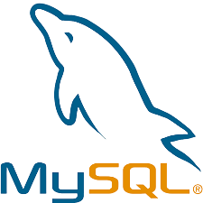
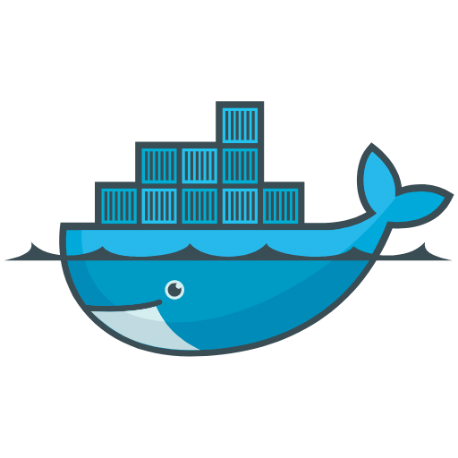

양준하
Profile & Credentials
백엔드 개발자 — Java · Spring Boot · FastAPI
YANG JUN-HA · 2000.04.28 · 경기도 과천 · 희망 직무 백엔드 엔지니어
1,100명
아그작 14일 운영
실사용자 · 이벤트 11만 건
실사용자 · 이벤트 11만 건
76%
검색 응답 1.2s → 280ms
Elasticsearch 마이그레이션
Elasticsearch 마이그레이션
7종
자격증 · 어학 1건
정보처리기사 · 한능검 2급 포함
정보처리기사 · 한능검 2급 포함
6건
수상 (SSAFY 우수상 3건
KSC2024 장려상 포함)
KSC2024 장려상 포함)
핵심 역량
근거가 남은 구현만 정리
01
실 트래픽을 받아 운영한 경험 — 아그작 14일간 방문자 1,100명·이벤트 11만 건. Redis ZSET·MySQL 스냅샷 랭킹 이원화로 Slow Query 0건, ShedLock으로 자정 스케줄러 데드락(SQLState 40001) 재발 0건.
02
병목을 측정해 구조로 해결 — 이조핑 북스토어 검색을 LIKE·N+1에서 Elasticsearch(nori·ngram·jaso)로 이전해 평균 1.2초 → 약 280ms. FastAPI 실습에서는 Keyset 페이지네이션과 복합·정렬·부분 인덱스를 EXPLAIN QUERY PLAN으로 검증.
03
배포·장애를 코드로 다루는 습관 — Blue/Green 무중단 배포와 롤백 CLI, liveness/readiness 분리 헬스체크, RDS 커넥션 풀 튜닝을 실습으로 직접 구현하고 테스트로 고정.
04
AI·데이터 파이프라인 — YOLOv8s로 횡단보도·과속방지턱 훼손 탐지 mAP50 0.80(KSC2024 수록·장려상), Spring AI·스케줄러로 던전·퀘스트 자동 생성, 아그작 FastAPI RAG 연동.
자격증 · 어학
총 7종 (국가기술·데이터·리눅스·IT역량·한국사·어학)
| 자격증 / 시험 | 발급 기관 | 취득일 | 점수 |
|---|---|---|---|
| 정보처리기사 | 한국산업인력공단 | 2025. 06. 13 | 75 / 100 |
| SQLD | 한국데이터산업진흥원 | 2023. 07. 07 | 66 / 100 |
| ADsP | 한국데이터산업진흥원 | 2026. 06. 05 | 74 / 100 |
| 리눅스마스터 2급 | 한국정보통신진흥협회 | 2026. 07. 03 | 80 / 100 |
| TOPCIT | 정보통신기획평가원 | 2024. 10. 12 | 595 / 1000 · 3수준 |
| 한국사능력검정시험 2급 | 국사편찬위원회 | 2026. 10. 30 | 74 / 100 |
| TOEIC Speaking | YBM 한국TOEIC위원회 | 2025. 10. 11 | IM3 · 130점 |
수상
6건
| 수상일 | 대회 · 수상 | 수여 기관 |
|---|---|---|
| 2025. 12. 18 | SSAFY 성적 부문 — 우수상 | 고용노동부 |
| 2025. 11. 20 | SSAFY 자율 프로젝트 — 우수상 2등 | 삼성전자 |
| 2025. 09. 29 | SSAFY 특화 프로젝트 — 우수상 1등 | 삼성전자 |
| 2025. 02. 03 | KSC2024 논문경진대회 — 장려상 | 한국정보과학회 |
| 2024. 11. 22 | CNU DevDay 코딩경진대회 — 장려상 | 충남대학교 컴퓨터융합학부 |
| 2023. 11. 10 | CNU SW 아카데미 프로젝트 경진대회 — 우수상 | 충남대학교 정보화본부 |
교육 · 학력
4건
- 삼성 청년 SW·AI 아카데미 13기 Java 전공자반 — 알고리즘·DB·웹 개발 전반, 자율/특화 프로젝트 수행
- NHN 아카데미 7기 Backend 과정 — Java·Spring Boot·MySQL, 8인 팀 도서 커머스 프로젝트
- CNU SW 아카데미 3기 Frontend 과정 — HTML·CSS·JavaScript·React
- 충남대학교 컴퓨터융합학부 졸업 — 졸업작품: 딥러닝 기반 도로 시설물 훼손 탐지 (KSC2024)
기술 스택
프로젝트에서 직접 사용한 기술만
LANGUAGE
BACKEND
DATA

MySQL 8 PostgreSQLINFRA · DEVOPS

DockerTEST · TOOL
JUnit5 · Mockito
pytest
Swagger
Git